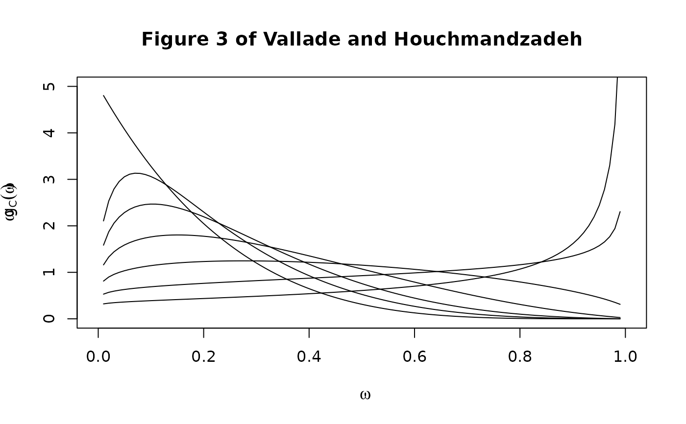

Various functions from Vallade and Houchmandzadeh
vallade.RdVarious functions from Vallade and Houchmandzadeh (2003), dealing with analytical solutions of a neutral model of biodiversity
Usage
vallade.eqn5(JM, theta, k)
vallade.eqn7(JM, theta)
vallade.eqn12(J, omega, m, n)
vallade.eqn14(J, theta, m, n)
vallade.eqn16(J, theta, mu)
vallade.eqn17(mu, theta, omega, give=FALSE)Arguments
- J,JM
Size of the community and metacommunity respectively
- theta
Biodiversity number \(\theta=(J_M-1)\nu/(1-\nu)\) as discussed in equation 6
- k,n
Abundance
- omega
Relative abundance \(\omega=k/J_M\)
- m
Immigration probability
- mu
Scaled immigration probability \(\mu=(J-1)m/(1-m)\)
- give
In function
vallade.eqn17(), Boolean with defaultFALSEmeaning to return the numerical value of the integral andTRUEmeaning to return the entire output ofintegrate()including the error estimates
References
M. Vallade and B. Houchmandzadeh 2003. “Analytical Solution of a Neutral Model of Biodiversity”, Physical Review E, volume 68. doi: 10.1103/PhysRevE.68.061902
Note
Function vallade.eqn16() requires the polynom library,
which is not loaded by default. It will not run for \(J>50\) due to
some stack overflow error.
Function vallade.eqn5() is identical to function
alonso.eqn6()
Examples
# A nice check:
JM <- 100
k <- 1:JM
sum(k*vallade.eqn5(JM,theta=5,k)) # should be JM=100 exactly.
#> [1] 100
# Now, a replication of Figure 3:
omega <- seq(from=0.01, to=0.99,len=100)
f <- function(omega,mu){
vallade.eqn17(mu,theta=5, omega=omega)
}
plot(omega,
omega*5,type="n",xlim=c(0,1),ylim=c(0,5),
xlab=expression(omega),
ylab=expression(omega*g[C](omega)),
main="Figure 3 of Vallade and Houchmandzadeh")
points(omega,omega*sapply(omega,f,mu=0.5),type="l")
points(omega,omega*sapply(omega,f,mu=1),type="l")
points(omega,omega*sapply(omega,f,mu=2),type="l")
points(omega,omega*sapply(omega,f,mu=4),type="l")
points(omega,omega*sapply(omega,f,mu=8),type="l")
points(omega,omega*sapply(omega,f,mu=16),type="l")
points(omega,omega*sapply(omega,f,mu=Inf),type="l")

# Now a discrete version of Figure 3 using equation 14:
J <- 100
omega <- (1:J)/J
f <- function(n,mu){
m <- mu/(J-1+mu)
vallade.eqn14(J=J, theta=5, m=m, n=n)
}
plot(omega,omega*0.03,type="n",main="Discrete version of Figure 3 using
eqn 14")
points(omega,omega*sapply(1:J,f,mu=16))
points(omega,omega*sapply(1:J,f,mu=8))
points(omega,omega*sapply(1:J,f,mu=4))
points(omega,omega*sapply(1:J,f,mu=2))
points(omega,omega*sapply(1:J,f,mu=1))
points(omega,omega*sapply(1:J,f,mu=0.5))